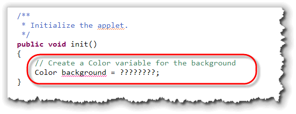
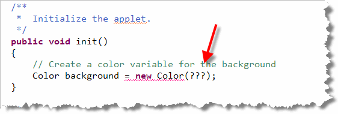
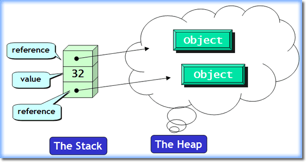
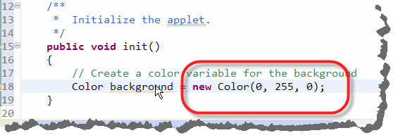
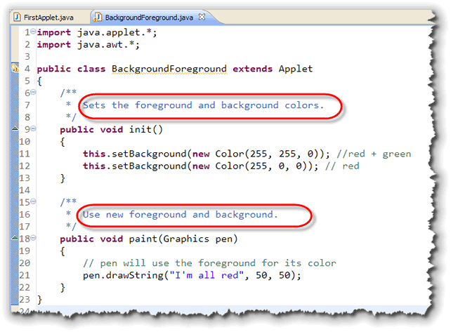
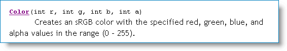
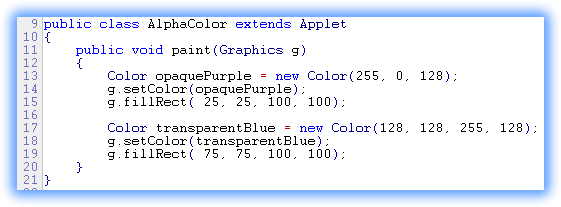
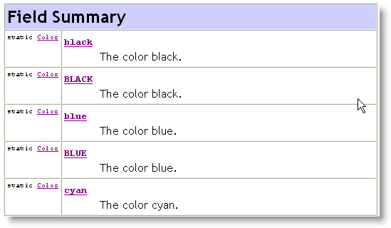

By this point, you've learned how to create
primitive variables, like int
and double
and object variables, like the Scanner object you've
used for input in your console programs, and the Turtle
objects that you met in class. You've also been introduced
to some of the differences between primitive types and objects.
In this section, I want to put that information to work,
concentrating on the skill of creating object
variables. To do this, we'll explore a few classes in the
java.awt package that are especially useful
when you write applets or graphical applications.
The theme for this section is constructing and using objects. You'll learn:
- how to use different
Colorconstructors - two ways to use your
Colorobjects - how to create transparent colors
- how to use class variables
Let's start
our exploration by examining the Color
class. Instead of using the "built-in" objects like Color.RED
and Color.BLACK, you'll learn how to create your
own custom Color objects.
Puce and chartreuse anyone?
Object Variable Review
As you've seen in the last few chapters, Java really has two major ways of representing data: primitive types like numbers and characters, and object types like fonts and buttons and strings.
You create an object variable, just like a primitive variable, by explicitly describing three things:
- What kind (type) of thing will be stored in the variable
- What name you want to use for the variable
- What initial value the variable should have
To store a value in your variable you use the assignment
operator, as you've seen. The assignment operator copies the
value on its right, and stores it in the object on its left.
To create a local variable of type Color, for instance,
you would write something like this:

As you can see, the type isColor and the name is
background; but how do we provide a value?
Constructing Objects
At this point, we're kind of in a quandary. How do we create an object? What do we put on the right-hand-side of the assignment operator? If our variable was a number, for instance, we'd expect to do something like this:
int someNumber = 27;
Since background is an object, however,
we need to learn how to construct an object; we can't just use
a literal value like 27. Fortunately, constructing an object
is easy. To construct an object—any object—you just
use a constructor method, along with the keyword
new. A constructor is simply a method
that allocates and initializes objects.
In Section 2.3, Variables and Values, I showed you some examples
using a Fraction class that I created just as an example.
Now we'll apply exactly the same techniques to a
class that you'll regularly use in your Java applets,
the Color class.
To make things even easier, constructors always have the same
name as the thing you're trying to create. Since we're trying
to create a Color object, we know that the
constructor is a method named Color(). Now we can
finish what we started:

Now the only problem is the "stuff" that goes inside the parentheses: the construction parameters.Constructor Parameters
We still have to tell the constructor exactly what kind of color we want it to create. We do that by passing arguments or parameters to the constructor when it is called. Right now, the constructor parameter list is empty—with only some question-marks acting as placeholders.
Most objects have several constructors, each one taking a different number or type of parameters. Parameters allow a constructor—or any other method—to customize its operation when you call it.
You'll look at the different Color constructors
later in this section. Before we do that, though, let's
examine a really important concept: how programs
store data. This is important so you'll understand why
we use the new operator for some variables,
(objects), and not for others, (primitives). (This may be review
for some of you.)
How Programs Store Data
Back in Chapter 1, you learned a little bit about how computers use memory. As we studied the history of computing, for instance, you learned about John von Neumann's development of the stored program concept: that memory could be partitioned, with one part storing data, and another part storing program instructions.
Modern computers take this idea even further. When a program is running, we can divide its data section up into three general categories:
- The static storage area. When a program runs, there are some data elements that can be created and stored in memory for the entire time that the program is running. Constant data elements, such as string literals are one example of this kind of data. Variables shared throughout the entire program are another.
 The stack-based storage area. When you create
a local variable inside a method, the memory used to store that
variable isn't set aside until the method is called
and the local variable declaration is encountered. That means
that if a particular method isn't called when you run your
program, no memory is set aside for those variables.
The stack-based storage area. When you create
a local variable inside a method, the memory used to store that
variable isn't set aside until the method is called
and the local variable declaration is encountered. That means
that if a particular method isn't called when you run your
program, no memory is set aside for those variables.
Stack-based variables are stored right next to each other in memory. This is called contiguous storage. One way to think of contiguous storage is to picture a stack of dinner plates in a restaurant like the Souplanation. (This is where the name stack came from.)
When you create a local variable inside a method, the memory for the variable is set aside on "the top" of the stack. When the method is finished, all of the variables placed on the stack are automatically removed, so the memory can be used for other purposes.- The heap or "free-store"-based storage area.
Stack-based storage is very efficient, but it has some real
limitations. Because elements are "stacked" on top of each
other, all of the elements need to be pretty much the same
size, (or some multiple of that size). Also, since memory
used for local variables is automatically reclaimed whenever
a method ends, stack-based variables don't work very well
for sharing information between methods.
The third area of memory, the heap, is used to get around these limitations. The heap is used to store the "data part" of reference types.

Reference Types
Reference type variables, (which include everything in Java except for the primitive numeric types, single characters and true/false values), are divided into two pieces:
- the reference or object variable
- the actual object itself
The object variable is the variable that you deal with
in your program; this is the part that you provide a
name for. The object variable may be stored on
the stack or in the static storage area, as shown below:
 The actual object itself is unnamed, and is
stored on the heap. Heap based variables are created
by using the
The actual object itself is unnamed, and is
stored on the heap. Heap based variables are created
by using the new operator, which allocates
the necessary memory from the heap, and then calls the
class constructor to initialize the object.
When the new operator and the constructor are
finished, they return a reference that allows
the Java runtime to locate the actual object's address in memory.
It's this reference token that is actually
stored in the object variable. If the object couldn't be
created, for some reason, the special value null
is stored in the variable instead.
References are kind of like pointers in languages like Pascal and C++, but not exactly the same. With a pointer, the actual address of the object is returned and store in a variable. With a Java reference, a separate number is returned that allows the JVM to look up the address. This is necessary because the JVM garbage collector may need to move the actual object to a new location in memory as your program runs.
Assignment
 Primitive types, (like
Primitive types, (like int and char),
are called value types, (as opposed to reference
types, like objects). This just means that a primitive variable
is a "bucket" in memory that contains an actual value.
When you create two primitive variables, like this:
int a = 32, b; // Two independent variables
then each variable is an independent storage area; the
variables a and b are not "linked"
in any way.
Value Assignment
When you use assignment with value types, the result is duplicate, independent copies of the values that the variables contain. Consider this example:
b = a; // Two independent values
When this code is executed, it first makes a copy of the value
stored in the variable a, and then places that
copy in the variable named b:
 This is called a deep copy, and we say that
This is called a deep copy, and we say that
a and b exhibit value semantics.
In Java, only primitive types exhibit value semantics. That's not true of all object-oriented languages. C++, for instance, is designed to allow user-defined types, (classes), to act in the same way by defining a copy constructor and an assignment operator. You'll study this in CS 250, C++ Programming II.
Reference Assignment
As you saw earlier, an object variable, (sometimes called a handle), contains a reference token that allows the JVM to locate the address of an object, but not the actual object itself.
If you have some code that looks like this:
Button a = new Button("The One and Only");
Button b = a;
the assignment copies only the reference, not the object.
The result is that the object variable b refers
to the same object as the variable a; the two
variables are aliases, not independent variables:
 This kind of assignment, where only the address is copied, but
not the underlying object, is called a shallow copy, and
we say that types that exhibit this behavior have reference
semantics. In Java, all types other than primitives,
have reference semantics.
This kind of assignment, where only the address is copied, but
not the underlying object, is called a shallow copy, and
we say that types that exhibit this behavior have reference
semantics. In Java, all types other than primitives,
have reference semantics.
With that understanding of the difference between reference
and object types, let's pick up where we left off, by
constructing or creating Color objects.
Creating Color Objects
Internally, Color objects in Java are represented
by a single 32-bit number, that can be broken down into three
or four pieces. You, however, don't really worry about the
internal representation; instead, you'll use the public
constructors and methods to create and manipulate Color
objects.
Logically, the Color class uses three numbers to represent
the portion of red, green, and blue that make up a color on
your computer. This is called RGB color; knowing this
will help you remember that red goes first, green second, and
blue last.
Here is one of the seven Color constructors
shown in the Javadoc documentation for the
Color class:
 As you can see, the red, green, and blue values each must
be between 0 and 255. If set the value to 255, then the
particular color is completely on; if you set the
value to 0, then the color is completely off.
As you can see, the red, green, and blue values each must
be between 0 and 255. If set the value to 255, then the
particular color is completely on; if you set the
value to 0, then the color is completely off.
Here's our example again, (from earlier in this lesson), this time
setting the variable background to an opaque green:

Note that red and blue are both off (0), while green, the value in the middle, is completely on. In DrJava, you can find the Javadocs by just selecting the class
you want to look up (put your cursor on the word Color
for instance), and then pressing Control + F6. This will open the
Javadocs in a new Browser window.
Then, you can scroll down until you find the Constructor Summary
section to find a list of available constructors and their
allowed parameter values.
Percentage Constructor
Sometimes, it is more convenient to construct an opaque color by specifying
the percentages of red, green and blue. To do this, just use
the float constructor like this:
Color penColor = new Color(.25f, .87f, 0f);
Each of the three parameters is a float value between 0f
and 1.0f, with 1.0 representing 100% of
the specified color.
Using Color Objects
Once you've created a Color object, you can
use it in two ways:
- you can temporarily change the color of the
Graphicspen used in thepaint()method, or, - you can change the background or foreground of the applet (or any other component), so that the drawing will take place in this new color.
Let's start by changing the color used by the
Graphics pen that draws the shapes
and text. Inside the paint() method, you can
call the Graphics setColor() method like this:
public void paint(Graphics pen)
{
. . .
Color penColor = new Color(0, 255, 0);
pen.setColor(penColor);
pen.drawString("I'm in green!", 25, 25);
. . .
}
The phrase "I'm in green!", will, indeed, be printed in
green because of the call to setColor();
however you should note that all other output
following this line will also be
printed in green.
When you use
setColor() it changes the output color for the rest
of the paint() method. To draw different
lines in different colors (as you'll do for one of your
homework assignments this week), you need to add multiple
setColor() lines.
If you won't use the variable penColor again, you
can just construct the Color object when you call
setColor() like this:
pen.setColor(new Color(0, 255, 0));
Background and Foreground
You can also use Color objects as arguments
to the Component setBackground(), and
setForeground() methods. Note that these are
not Graphics methods, so they must be
sent to a graphical Component object, such as a
your applet or the buttons and labels we'll study in
weeks to come. Since you're already inside your
applet, you don't have a receiver name when you
call the method. In such cases, you can use the keyword
this, or simply dispense with the receiver
altogether, like this:
this.setForground(new Color(128, 255, 128)); // OK
setBackground(new Color(112, 75, 233)); // Also OK
When you call setForeground() and
setBackground() you change the applet's "permanent" copy
of the Graphics object used for painting. Because
of this, you should put such method calls inside
the init() method, not inside of the
paint() method, as the examples you've seen so far.
Here's an example applet that sets its background to yellow
and then does all of its drawing in red:

Remember : Use setColor() inside
the paint() method to temporarily change the painting
color. Use setBackground() or setForeground()
inside the init() method, to permanently change the
background or foreground color of your applet.
Creating Transparent Colors
In Java 2, an additional value was added to the Color class,
called the alpha channel to control opacity. This new
model is sometimes called ARGB, but the constructor
used to create such colors puts the alpha argument last,
as you can see here:

As with the red, green, and blue values, you supply anint value between 0 and 255 to specify
the opacity: 255 is completely opaque, while 0 is
completely transparent (and thus invisible).
Here's a sequence of setColor() and
fillRect() calls draws an opaque purple
rectangle, and then overlays it with a partially
transparent blue rectangle:

Click this link to run the applet in your browser. Here's what the applet looks like when it runs (if you don't have Java installed on the machine you're currently using.)
Color Constants and Class Variables
Although only simple primitive types, like int have
literals, (along with the special case of the String
class, of course), some classes create public class constants
that you can use in the same way. The Color
class has defined several such constants for the most
common "plain" colors.
Here's what the constant definitions
look like in the JavaDocs.

Such class constants are objects created inside theColor class itself, using code that looks something
like this: (we'll look at class definitions later in the course).
public class Color
{
/**
* The color blue.
*/
public final static Color blue = new Color(0, 0, 255);
}
The modifier public means that anyone can access the
field, the modifier final means that those accessing
the field cannot change it (it is constant), and the modifier
static means that the field is associated with the
class rather than with an individual object.
The important thing to understand with these class
constants, is that they are Color objects that
live inside the Color class.
To use such class variables you use the class name before the variable name, like this:
g.setColor(Color.BLUE);
Color background = Color.GREEN;
Note that when you use a class constant to initialize an
object variable (background in this case), you
do not use the new operator.
You may have noticed that all of the Color constants
have both lowercase and uppercase variations. The lowercase
constants are the originals; however may people complained to
Sun that the Java convention for constant names required
uppercase names for constants. In SDK 1.4, Sun added the uppercase
names to be consistent with the standard Java naming conventions.

Objects and Color Summary
- The
Colorclass, in thejava.awtpackage represents color in GUI programs. Internally, colors are stored as portions of a single 32-bit number. - A program's local variables are created on the runtime stack. Objects, though, are created on the runtime heap. The value stored inside an object variable is a reference to the corresponding object on the heap.
- To construct an opaque
Colorobject, you pass the constructor threeintvalues between0and255. The values represent the red, green and blue portions of the new color, in that order (RGB). Zero represents no color, while255is maximum intensity for that color. - Alternatively, you may use the percentage constructor, passing
three
floatvalues between0f(0%) to1.0f(100%). - To use the
Colorobject in an applet, pass it to theGraphicssetColor()method inside yourpaint()method, before drawing your text. - To change the background or foreground color of an applet, add an
init()method and call theAppletsetForeground()orsetBackground()method inside. (Theinit()method will run just once when your applet is first loaded.) - To create transparent colors, use the four-argument
Colorconstructor and pass a value less than 255 for the alpha channel argument. - You may use one of the predefined
Colorconstants without constructing an object. Write the names likeColor.BLUE,Color.GREEN, etc.